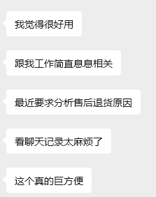
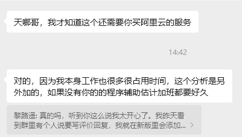
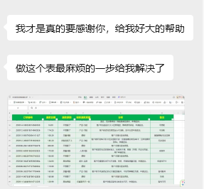

AI 话术生成
基于聊天上下文快速生成可直接发送的回复，覆盖安抚、议价、催付等高频场景。
电商客服话术生成 + 话术管理
天猫｜京东｜拼多多｜抖音 客服常用的话术效率工具
两大核心能力：AI 话术生成 + 话术管理。先帮你快速回复，再把好话术沉淀成团队资产。
云端服务稳定运行，客户端轻量，打开即用。
「话术精灵SoftTalk」不是只给一句回复的单点工具，而是把「话术生成」和「话术管理」 合在一起的电商客服效率工具。客服在聊天中可直接生成回复，团队也能把高频、成交、售后、 安抚等话术持续沉淀下来，形成可复用的话术资产。
当前版本核心服务已部署在独立云端服务器，客户端负责展示、调用、 自动复制和一键插入话术，不占用本机算力，保证长时间运行更稳定。
本地话术支持按天自动备份到你自己的电脑本地；系统会定期自动清理过期备份， 你只管整理和优化话术，不用总惦记手动备份这件事。
基于聊天上下文快速生成可直接发送的回复，覆盖安抚、议价、催付等高频场景。
把高频、成交、售后等常用话术统一沉淀下来，避免优秀表达散落在聊天记录里。
让新老客服围绕同一套标准话术协作，减少风格不一致和重复培训带来的损耗。
检测到本地话术改动后，会按天自动备份到你的电脑本地，并定期自动清理过期备份。
针对未成交和退货原因给出结构化分析，持续反哺话术生成和话术管理内容。
我听过很多次一句话：「你去安抚一下这个客户。」真正难的， 不是知道要安抚，而是很少有人会把方法真正讲清楚。
这些年，我一直在研究怎么更稳妥地处理客户情绪，也试着把方法分享给团队。 但大家很快碰到同一个现实问题：如果每次都靠人工慢慢组织语言， 客服响应时间很难跟上。
后来，我花了很长时间把这套安抚情绪的方法沉淀进系统。 现在，只需要「一键」，就能生成更稳妥、更克制、 也更容易让客户冷静下来的回复。



还能把高频、成交、售后、安抚等常用话术集中管理，方便团队复用，减少优秀话术只停留在个人经验里。
客户端支持本地按天自动备份，并会定期自动清理过期备份文件。你编辑的话术会持续留在自己电脑本地，日常使用更省心。
重点适配天猫、京东、拼多多、抖音等电商客服场景，也适合任何高频客户咨询和团队协作岗位。
可以。系统既能按聊天上下文生成可直接使用的话术，也能让新客服直接调用团队已经沉淀好的标准话术。